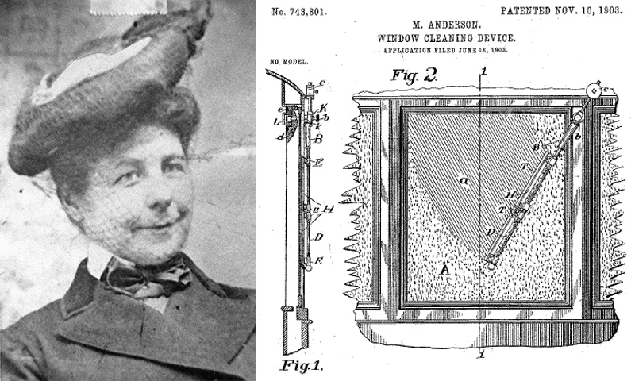

В 1903 году Джон Апджон запатентовал способ очистки вертикального стекла двумя щетками, движущимися вверх и вниз. А уже через несколько месяцев Мэри Андерсон изобрела автоматические дворники, совершающие колебательное движение. И только более чем полвека спустя дворники стали двигаться не непрерывно, а с паузой (задержкой) между циклами движения. Эта идея Роберта Кернса сначала была попросту присвоена производителями автомобилей, в первую очередь Форд. Но суд США, изучив дело, присудил выплатить Кернсу компенсацию – в общей сложности около 30 миллионов долларов.
